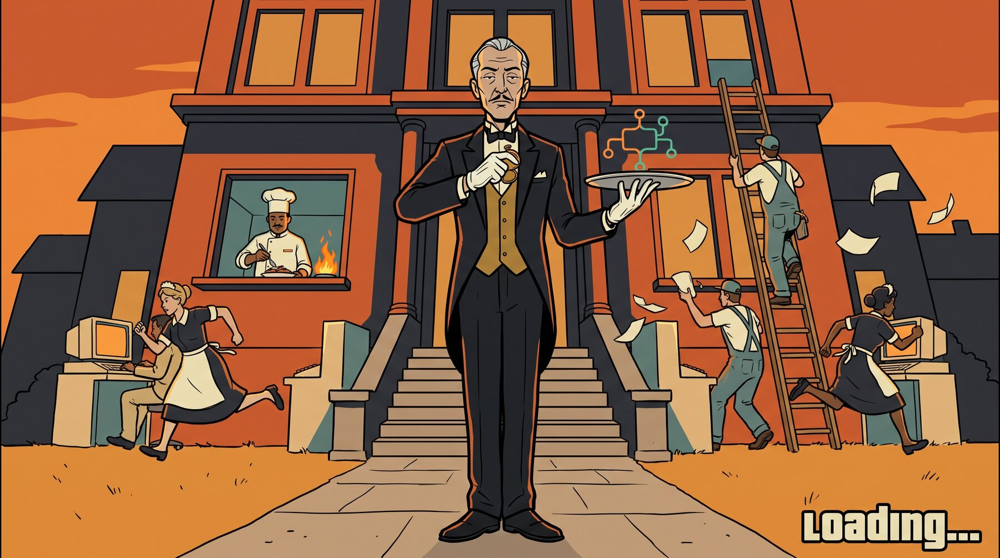
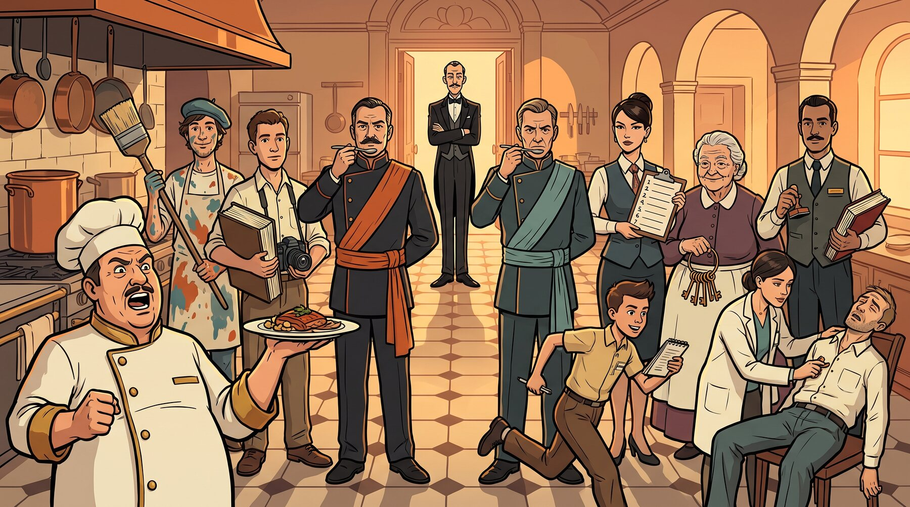
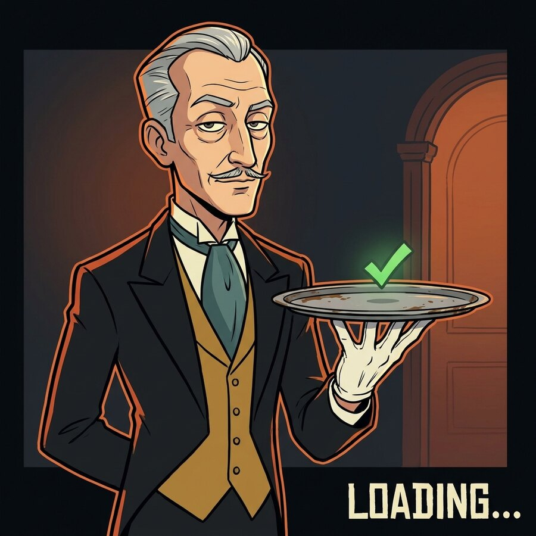

A plugin for Claude Code

Maestro
Every genius needs staff.
A butler for your codebase — he runs the staff, keeps the register, and only knocks when it’s truly your decision.
One session stays light enough to drive for hours. Everything else is delegated, isolated, reviewed by a rival kitchen, and written down.
I The Household
Sixteen seats. None of them yours.
He never carries the luggage himself. He has staff for that — and so, now, do you. The roster ships closed: no one is hired mid-shift, and the man you actually talk to is forbidden from touching the code. There is a law against it.
| Role | Seat | House note |
|---|---|---|
| The chef de cuisine | executor-sol | Does most of the actual cooking. Loud kitchen, superb plates. |
| The visiting artist | executor-claude | Called in for the frescoes and the façade. |
| The new hire from abroad | executor-gemini | Third kitchen, enormous pantry. |
| The inspectors | reviewer-claude reviewer-sol reviewer-gemini | Always from a different kitchen than the cook. House law. |
| The secretary | planner | Turns “fix everything” into a numbered list of errands with acceptance criteria. |
| The two consiglieri | convergence plan-counterpart | When the household disagrees they argue in a closed room — two passes, no more — and come out with one answer, or bring you both. |
| The housekeeper | context-keeper | Remembers what you meant, not just what you said. Answers the staff’s questions so they don’t knock on your door. |
| The errand boy | scout | Fast, cheap, reads everything, touches nothing. |
| The librarian | researcher | Comes back with citations or doesn’t come back. |
| The archivist | crystallizer | Reads the whole diary so nobody else has to; hands you one page. |
| The night clerk | handoff-recorder | Writes down how the day ended. Every ending, one entry, no poetry. |
| The house doctor | fleet-medic | Walks the halls, checks pulses, notes who’s alive, dead, or pretending. |
| The majordomo | maestro | Conducts. Never carries anything. There is a law against it. |

II The Register
Not in the register? It didn’t happen.
He is severe on exactly one point. .maestro/ledger.jsonl is append-only and it is the house’s memory. “Tests pass” is not a sentence someone says; it is a command that ran, with exit code 0, stamped by the only script permitted to stamp it. A story without a stamp is gossip.
01 {"seq":41,"kind":"mission-open","payload":{"mission_id":"m-014","title":"rate-limit /export"}}
02 {"seq":42,"kind":"gate","payload":{"cmd":"npm test","exit_code":1}}
03 {"seq":43,"kind":"revise-verdict","payload":{"seat":"reviewer-gemini","detail":"round 1"}}
04 {"seq":44,"kind":"gate","payload":{"cmd":"npm test","exit_code":0}}
05 {"seq":45,"kind":"stop","payload":{"stop_state":"DONE","reporter":"maestro"}}Five lines. The whole morning. Line 02 is in there on purpose — the house records failures at the same volume as successes. Every line also carries a stamped ts, correlation_id and schema_version, trimmed here for width.
III Recovery
The estate survives the night.
Dismiss the entire staff at midnight. Close the laptop mid-sentence, run out of context, kill the session in a temper — it makes no difference. At dawn a new staff reads the register, reconciles the roster against what is actually still running, and resumes at the exact brick where work stopped. Nothing is rebuilt twice. Restart is reconciliation, not re-planning.
Why it can do that
Every executor commits after each coherent step in its own wing and writes one line to progress.jsonl:
{ step, done_evidence, next }
So the cost of a crash is bounded by how finely the work was stepped — never by how large the job was.

IV Review
No chef tastes only his own soup.
Whoever cooked it does not get to approve it. The inspector always comes from a different model family than the author — and the script that closes a mission structurally refuses to write the record when the two families match. This floor cannot be lowered in settings. It is not a preference.
-
claude
plans, reviews, paints
inspected by gpt · gemini
-
gpt
default implementer
inspected by claude · gemini
-
gemini
large context, rotation
inspected by claude · gpt
And when the kitchen argues
- 1 The inspector says revise. The same worker resumes — same session, same memory. Twice at most.
- 2 Still stuck: two families with no stake in the dispute take independent positions, then reconcile. Two passes, hard cap.
- 3 Small disagreements park in the drawer with their evidence. Only a foundational one — S1 — reaches you, with both positions verbatim.
Ambiguity about what you meant skips the ladder entirely and comes straight to your door, as one question.
V Install
Sir does not carry luggage.
1 Engage him.
git clone https://github.com/Fredasterehub/maestro.git
claude --plugin-dir ./maestro
Or drop it in your plugins directory, and every session is met at the door.
2 Dismiss the previous butler.
Remove any competing orchestration layer from your global CLAUDE.md first. Two session brains fight each other, loudly, in your context window.
3 Ask for something.
There is no setup interview. State lands in .maestro/ on first use; /maestro:doctor will tell you the truth about your install, read-only.
/maestro:statusneeds-you · done · self-progressing · queued/maestro:handoffsweep session knowledge somewhere durable/maestro:doctorinstall and state health/maestro:auditprocess health: revise rates, ladder use, worker deaths

VI The Trees
Every job gets its own wing.
No work happens in the lived-in rooms. Each job is dispatched into an isolated worktree and nothing rejoins the house until an inspector from another kitchen signs for it. The second tree is the one that decides whether you are disturbed at all.
{kind=link}
{kind=link}